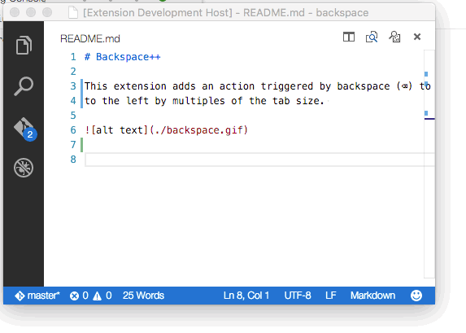
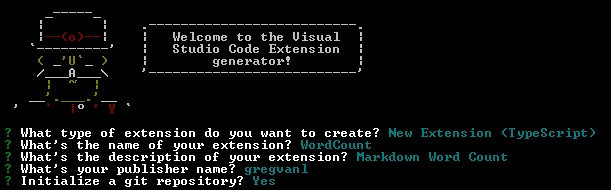
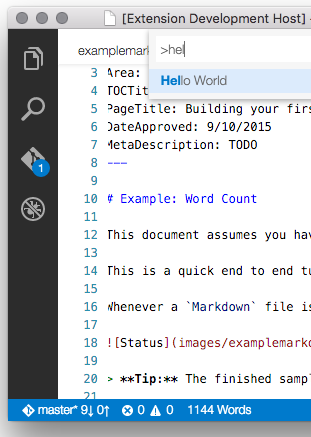
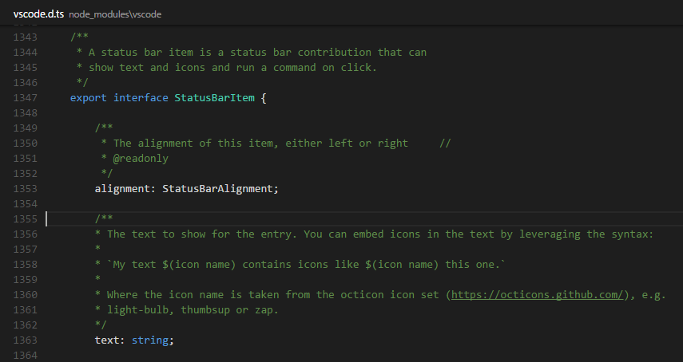
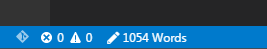

Example - Word Count
This document assumes you have read Your First Extension which covers the basics of VS Code extensibility.
Word Count is an end to end tutorial to show you how to create an extension to aid in Markdown authoring. Before we get into how all of this works, let's have a quick demo of the core features you will be building so you know what to expect.
Whenever a Markdown file is edited, a status bar
message is added. The message includes the current word count
and updates as you type and move from file to file:

Tip: The finished sample is available from this GitHub repository should you have any issues.
Overview
This example has three sections which will take you through a set of related concepts:
-
Update the Status Bar
- display custom text in the VS Code
Status Bar -
Subscribing to Events
- updating the
Status Barbased on editor events - Disposing Extension Resources - release resources like event subscriptions or UI handles
First make sure you have the latest VS Code extension generator installed then run it:
npm install -g yo generator-code
yo code
This will open up the extension generator - we will base this
example on the TypeScript New Extension option.
For now, fill in the fields the same way you see them
completed in the image below (using 'WordCount' as the
extension name and your own name as the publisher).

You can now open VS Code as described in the generator output:
cd WordCount
code .
Run the Extension
Before we go on, we can run the extension to make sure
everything works as expected by pressing
kb(workbench.action.debug.start). As you saw in
the previous "Hello World" walkthrough, VS Code opens another
window (the
[Extension Development Host] window) in which
your extension will be loaded. You should find the "Hello
World" command in the Command Palette (press
kb(workbench.action.showCommands)) and when you
select it, you will see an information box at the top of the
window saying "Hello World".
Now that you have confirmed that the extension is running
properly, you can keep the extension development window open
if you like. To test out any changes that you make to your
extension, you can either press
kb(workbench.action.debug.continue) again in the
development window or reload the extension development window
by pressing kbstyle(Ctrl+R) (Mac:
kbstyle(Cmd+R)).
Update the Status Bar
Replace the contents of the generated
extension.ts file with the code shown below. It
declares and instantiates a WordCounter class
which can count words and shows them in the VS Code Status
Bar. The "Hello Word" command will call
updateWordCount when invoked.
// The module 'vscode' contains the VS Code extensibility API
// Import the necessary extensibility types to use in your code below
import {window, commands, Disposable, ExtensionContext, StatusBarAlignment, StatusBarItem, TextDocument} from 'vscode';
// This method is called when your extension is activated. Activation is
// controlled by the activation events defined in package.json.
export function activate(context: ExtensionContext) {
// Use the console to output diagnostic information (console.log) and errors (console.error).
// This line of code will only be executed once when your extension is activated.
console.log('Congratulations, your extension "WordCount" is now active!');
// create a new word counter
let wordCounter = new WordCounter();
let disposable = commands.registerCommand('extension.sayHello', () => {
wordCounter.updateWordCount();
});
// Add to a list of disposables which are disposed when this extension is deactivated.
context.subscriptions.push(wordCounter);
context.subscriptions.push(disposable);
}
class WordCounter {
private _statusBarItem: StatusBarItem;
public updateWordCount() {
// Create as needed
if (!this._statusBarItem) {
this._statusBarItem = window.createStatusBarItem(StatusBarAlignment.Left);
}
// Get the current text editor
let editor = window.activeTextEditor;
if (!editor) {
this._statusBarItem.hide();
return;
}
let doc = editor.document;
// Only update status if an Markdown file
if (doc.languageId === "markdown") {
let wordCount = this._getWordCount(doc);
// Update the status bar
this._statusBarItem.text = wordCount !== 1 ? `${wordCount} Words` : '1 Word';
this._statusBarItem.show();
} else {
this._statusBarItem.hide();
}
}
public _getWordCount(doc: TextDocument): number {
let docContent = doc.getText();
// Parse out unwanted whitespace so the split is accurate
docContent = docContent.replace(/(< ([^>]+)<)/g, '').replace(/\s+/g, ' ');
docContent = docContent.replace(/^\s\s*/, '').replace(/\s\s*$/, '');
let wordCount = 0;
if (docContent != "") {
wordCount = docContent.split(" ").length;
}
return wordCount;
}
dispose() {
this._statusBarItem.dispose();
}
}
Now let's try our updates to the extension.
We have the compilation of the TypeScript file set on a watch
(in the extension's .vscode\tasks.json file) so there is no
need to re-build. Hit kbstyle(Ctrl+R) in the
[Extension Development Host] window where
your code is running and the extension will reload (you can
also just kb(workbench.action.debug.start) from
your primary development window). We still need to activate
the code in the same way as before with the "Hello World"
command. Assuming you are in a Markdown file, your Status Bar
will display the word count.

This is a good start but it would be cooler if the count updated as your file changed.
Subscribing to Events
Let's hook your helper class up to a set of events.
-
onDidChangeTextEditorSelection- Event is raised as the cursor position changes -
onDidChangeActiveTextEditor- Event is raised as the active editor changes.
To do this, we'll add a new class into the
extension.ts file. It will set up subscriptions
to those events and ask the WordCounter to update
the word count. Also note how this class manages the
subscription as Disposables and how it stops listing when
being disposed itself.
Add the WordCounterController as shown below to
the bottom of the extension.ts file.
class WordCounterController {
private _wordCounter: WordCounter;
private _disposable: Disposable;
constructor(wordCounter: WordCounter) {
this._wordCounter = wordCounter;
// subscribe to selection change and editor activation events
let subscriptions: Disposable[] = [];
window.onDidChangeTextEditorSelection(this._onEvent, this, subscriptions);
window.onDidChangeActiveTextEditor(this._onEvent, this, subscriptions);
// update the counter for the current file
this._wordCounter.updateWordCount();
// create a combined disposable from both event subscriptions
this._disposable = Disposable.from(...subscriptions);
}
dispose() {
this._disposable.dispose();
}
private _onEvent() {
this._wordCounter.updateWordCount();
}
}
We no longer want the Word Count extension to be loaded when a command is invoked but instead be available for each Markdown file.
First, replace the body of the activate function
with this:
// Use the console to output diagnostic information (console.log) and errors (console.error).
// This line of code will only be executed once when your extension is activated.
console.log('Congratulations, your extension "WordCount" is now active!');
// create a new word counter
let wordCounter = new WordCounter();
let controller = new WordCounterController(wordCounter);
// Add to a list of disposables which are disposed when this extension is deactivated.
context.subscriptions.push(controller);
context.subscriptions.push(wordCounter);
Second, we must make sure the extension is activated upon the
opening of a Markdown file. To do this, we'll
need to modify the package.json file. Previously
the extension was activated via the
extension.sayHello command which we no longer
need and so we can delete the entire
contributes attribute from
package.json:
"contributes": {
"commands":
[{
"command": "extension.sayHello",
"title": "Hello World"
}
]
},
Now change your extension so that it is activated upon the
opening of a Markdown file by updating the
activationEvents attribute to this:
"activationEvents": [
"onLanguage:markdown"
]
The
onLanguage:${language}
event takes the language id, in this case "markdown", and will
be raised whenever a file of that language is opened.
Run the extension by either doing a window reload
kbstyle(Ctrl+R) or with
kb(workbench.action.debug.start) and then start
editing a Markdown file. You should now should have a live
updating Word Count.
If you set a breakpoint on the activate function,
you'll notice that it is only called once when the first
Markdown file is opened. The
WordCountController constructor runs and
subscribes to the editor events so that the
updateWordCount function is called as Markdown
files are opened and their text changes.
Customizing the Status Bar
We've seen how you can display formatted text on the Status
Bar. VS Code allows you to customize your Status Bar additions
even further with color, icons, tooltips and more. Using
IntelliSense, you can see the various
StatusBarItem fields. Another great resource for
learning about the VS Code extensibility APIs is the
vscode.d.ts type declaration file included in
your generated Extension project. Open
node_modules\vscode\vscode.d.ts in the editor,
you'll see the complete VS Code extensibility API with
comments.

Replace the StatusBarItem update code with:
// Update the status bar
this._statusBarItem.text = wordCount !== 1 ? `$(pencil) ${wordCount} Words` : '$(pencil) 1 Word';
this._statusBarItem.show();
to display a
GitHub Octicon
pencil icon to the left of the calculated word
count.

Disposing Extension Resources
Now we'll take a deeper look at how extensions should handle VS Code resources through Disposables.
When an extension is activated, it is passed an
ExtensionContext object which has a
subscriptions collection of Disposables.
Extensions can add their Disposable objects to this collection
and VS Code will dispose of those objects when the extension
is deactivated.
Many VS Code APIs which create workspace or UI objects (e.g.
registerCommand) return a Disposable and
extensions can remove these elements from VS Code by calling
their dispose method directly.
Events are another example where onDid* event
subscriber methods return a Disposable. Extensions unsubscribe
to an event by disposing the event's Disposable. In our
example, WordCountController handles the event
subscription Disposables directly by keeping its own
Disposable collection which it cleans up on deactivation.
// subscribe to selection change and editor activation events
let subscriptions: Disposable[] = [];
window.onDidChangeTextEditorSelection(this._onEvent, this, subscriptions);
window.onDidChangeActiveTextEditor(this._onEvent, this, subscriptions);
// create a combined disposable from both event subscriptions
this._disposable = Disposable.from(...subscriptions);
Installing your Extension Locally
So far, the extension you have written only runs in a special
instance of VS Code, the Extension Development Host instance.
To make your extension available to all VS Code instances,
copy the extension folder contents to a new folder under
your .vscode/extensions folder.
Publishing your Extension
Read about how to Share an Extension.
Next Steps
Read on to find out about:
- Extension Generator - Learn about other options in the Yo Code extension generator.
- Extension API - Get an overview of the Extension API.
- Publishing Tool - Learn how to publish an extension to the public Marketplace.
- Editor API - Learn more about Text Documents, Text Editors and editing text.
- Additional Extension Examples - Take a look at our list of example extension projects.